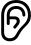

Képler
Siguineau
(cape-lair see-gee-no)
Apps
Businesses
Cities
Swipe Up
Version 0.2.9.2
Discover the NEW...
go back
"Mangé Lakay" Project
“...if Haiti could be kept free from revolutions, she might easily become, in proportion to her territory and population, the richest country in the world...” - Frederick Douglass (First American Minister to Haiti)
Do you want to know what Singapore, China, South Korea, and Botswana have in common?
They are all nations that went through a major transformation
They all started extremely poor in and are now rich
China is a great example of that transformation
Adam Smith (the “father” of capitalism) said this about China in the 18th century…
“The poverty of the lower ranks of people in China far surpasses that of the most beggarly nations in Europe…”
And this…
“Marriage is encouraged in China, not by the profitableness of children, but by the liberty of destroying them. In all great towns, several are every night exposed in the street or drowned like puppies in the water. The performance of this horrid office is even said to be the avowed business by which some people earn their subsistence.”
That's how China used to be…
Now China is the second wealthiest nation in the world
China had a GDP per capita of only $76 in 1961
its had a GDP per capita of $12,597 in 2023
Singapore had a GDP per capita of only $425 in 1961
It's had a GDP per capita of over $84,734 in 2023
South Korea had a GDP per capita of only $158 in 1961
Its had a GDP per capita of over $35,563 in 2023
Botswana had a GDP per capita o only $63 in 1961
its had a GDP per capita of over $7,249 in 2023
Do you think they did a good job?
Do you want to know how they did it?
They adopted capitalism and allocated their capital properly
With the “Mangé Lakay,” we are implementing their examples to generate a lot of value for the people of Kotfè, Haiti, and our shareholders
Right now, the economy of Kotfè is in dire conditions, in fact, its economy has regressed since the 70s
There is no concrete data to show the financial health of the city, however there’s still some things that show the extreme poverty
First, the data of the country's general financial health
Haiti had a GDP per capita of $68 in 1961 and a GDP per capita of $1,693 in 2023
It was as poor as China and Botswana, and pretty close to South Korea and Singapore…
Their starting position was similar, yet their current position is quite dissimilar
Botswana had the lowest starting point (lower than haiti by $5) and now it's 4X richer than Haiti
Singapore had the highest starting position of $425, at the time, it was about 6X richer than Haiti
Now, with a GDP per capita of $84,734 its 50X richer than Haiti
Our city is going backwards…
The canal that was built with the help of my grandfather in the 50s is poorly maintained...
and it's still the only water distribution system for the farmers
Important to note that the majority of the people of Kotfè are farmers
That’s how productive our economy is
You may ask…
"Why Kotfè?"
It's because…
Most of Kotfè’s citizens are spending 90% of their income on food
The citizens of Kotfè eat on average of only 4 days of the week
Many of the population has to walk many miles to fetch water
Security risk is low (compared to the capital with gang violence)
It’s my hometown. My entire family lineage (dad, mom, grandparents…)
Haiti is a free market capitalist nation
Its economy being a virgin means lots of opportunity
Our goal for this fund is to generate over $20 Billion of Value for the city of Kotfè in Haiti,
and indirectly generate over $100 Billion for the county of Haiti and a 9,000% return for our shareholders
Yes, 9,000% return on your money does sound too good to be true
That’s because those are usually with a title like…
“Quick-Money Guaranteed”
our company is not one of those…
Your return by investing in the fund will not be immediate massive returns
Our company’s return is based on a 40-year time horizon
We will be using good capital allocation and the magic of compound interest to turn each dollar
you invest into a 9,000X ROI
In simpler English, each dollar you put in NOW will give you $9,000
You may be asking yourself…
“Will they guarantee my 9,000x ROI?”
The simple answer to that question is no
Your direct in Kotfè, which by Ben Graham would rightfully agree, is speculative
It being speculative is where the opportunity for such massive return on capital…
It’s also how Kotfè will be able to leave poverty and become wealthy
Overall our goal is to have a business that starts with agriculture, be profitable
amase capital and allocate it for industries that need a lot of capital for investment…
What is the first decade(food)
Our first focus is to be able to produce and distribute 150,000 eggs a day with a revenue of USD 8 Million a year
Have a production of corn that is substantial, in which we have enough stock to feed 100,000 people for a year in surplus
and we can produce enough corn to feed 200,000 people a day and be able to distribute said quantity of corn with a revenue of USD 100 Million a year
Make Vetiver feed. We sell it to farmers for their animals and to fragrance companies as raw material for their fragrances.
Haiti has a deforestation problem that exists due to two main problems (which Vetiver can help).
1) The use of trees as a source of energy. Charcoal is still a popular way for citizens across the country to use energy.
For things like lighting, cooking, and simple activities like ironing clothes. Vetiver can be used as biofuel.
2) Haiti is a mountainous country, even without human activity, the land wants to swim downwards, vetiver is a great grass
that stops that kind of erosion by trapping the soil.
During the second decade (development)
We build buildings on our lands and for others. This will include commercial buildings,
apartment complexes, single-family homes, and commercial-residential hybrid housing. We will also be building public buildings.
Build churches, build schools. Build canals, and provide farming consulting services to farmers around the area.
Implement our cash crops with those farmers. They can be partners with our business. They will have to follow our standards
when it comes to production, distribution and marketing. We also work on creating more products with our raw materials.
This will include boiled eggs, fermented eggs, frozen egg patties, egg salad, dry corn, cornmeal, cornflour, corn starch, etc.
During the third decade (transportation)
We build a private transportation business. That includes private taxi, tap tap (8 people), large buses (32) and inter city transportation
We will also build transportation for tourists. This means creating high-end transportation services that include sightseeing.
This means we control traffic and can charge more for our services and get a percentage of the revenue
We also sell our distribution network to other businesses across the island and foreign imports into the city and country.
During the fourth decade (infrastructure)
We build the infrastructure of the city, neighbouring cities, province, and country.
We build large public projects. This will be things like roads, airports, ports, canals, water systems, energy.
“What we have done and currently doing”
We originally started our business selling boiled eggs. It's a popular breakfast food in haiti
that is purchased at local markets and sometimes by wandering salesman that walk up and down the community to sell their eggs
With the cost of the eggs and the labour of actually paying someone to boil the eggs and bring them to market,
we were able to earn a 30% profit margin in that business
However, we had to stop that business even though the numbers were wonderful…
The reason… we ran out of eggs to purchase and it was a quick wall that we hit
For comparison, I can go to a local walmart and purchase over 40 cartons of 60 eggs in
one day vs only being able to get 100 eggs in a city of over 50,000 people
That’s right, in a town of over 50,000 people, the market could not provide more than 100 eggs for a business venture
Thus we realised that we had to supply the market with the eggs, and that’s the genesis of this company
“What we have”
We currently have land under management explicitly for our chickens.
Currently its 5 centième of land that we are renting it until October 2033
We also have have about 10 centième of land that will come through inheritance
(this will not be accounted for yet, as the land has not yet been acquired)
What does a centième of land mean? Its haiti’s convoluted way of land measurement
Explained below for our comprehension
A centième literally means 1/100th of a Carreau. Although a carreau sounds like an acre in French, they are not the same thing
A carreau = 1.29 hectares
A centième = 1.29 hectares / 100 => 129 Meters square
What does that mean to our chickens?
It means that we are able to house comfortably (with our current productivity)
13 chickens per centième of land…
we used the very liberal requirement of 10 metres^2 needed per chicken
However based on research we can go all the way down to the extreme of 1 metre^2 per chicken or the more comfortable 2 metre^2 per chicken
We will be going with the 2 metre^2 per chicken
with that calculation, we can house 129 metres^2/2 metres ^2 =>
64 chickens per centièmes of land
With higher productivity we can house more chickens per parcel of land, we will be basing our calculations on our current productivity,
however we will update our fund’s report to match the advancements that are found
(Cal-Maine food produces 12 billion eggs a year, and only .07 m^2 per hen!)
We currently have livestock
We have chickens that are all currently mature, and some of our initial stock was able to reproduce
We have 45 female chickens AKA hens who are our money printers
These hens are able to produce eggs nearly daily that can be sold to the market
and after they are done producing eggs for the 2 years, we will be able to sell them for meat
We have 5 male chickens…
We only need 1 male for each 10 females for reproduction…
That is currently what we have right now for the agriculture side of the business which is
what we are focusing now until 2034
We also have a few more assets:
We have a “Charge your electronics” business that is currently generating enough revenue for us to be able to feed our current stock of chickens
We also have a “top-up” business that allows us to get a 40% return on our capital
In Haiti, it's a common business. Many phone plans require the consumers to buy minutes to be able to call, text and use the internet
This business does not require anything besides capital and marketing to be able to get a return on our money
Those are the current ways that we are able to generate value, revenue and profit to support the vision
Our Risks
Earlier, we mentioned that our company is speculative and to be transparent, we have many risks
.
Below is a list of our risks and how likely they are to be take effect and also how we plan to deal with said risk
Although we want to tell you that this will not happen, we have to be upfront about its possibility,
how it can impact us, and how we plan to mitigate some of those risks and what cannot be mitigated that we have no control over
The first risk, Haiti is not know as a safe vehicle for capital allocation, in fact there are very countries in the world that Ben Graham
would consider a safe investment vehicles
Due to the nature of Haiti, if you are looking to invest conservatively (which I highly recommend)
you will invest 90% of your money into conservative investment vehicles and 10% into our company
That is currently what I am doing myself, I don’t like the idea of losing all my money!
We will continue to adapt and make sure to release quarterly reports to show how the fund is doing
Again, our goal is for that to not happen, alas, we cannot control real life results that’s
why we are upfront about our risks
The development of Kotfé, which is the purpose of the company
There are a couple benefits
Haiti’s market is highly underserved, so there’s plenty of opportunity for us to profit.
If we look at the US’s mature wealthy nation’s annual growth, you will see a low growth of
only 2.5% meanwhile the global GDP growth of poor nations is 7%. Over 3X what the US is able to do.
Not because those countries are “better”, that would be ridiculous. It is because there is a LOT of room for growth
in their economy. That’s how we aim to provide value to our shareholders.
Labour costs are low. The average haitian labourer is willing to work for only $0.80 USD/Hour
which is actually a competitive wage and they are willing to work for as low as $0.25 USD/hour
Favourable trade with the United States. HOPE/HELP acts have made certain exports from Haiti to the United States
to be duty free. This include raw materials for textile (not our business) and for agricultural goods (our business)
The current private trade business between The US+Canada to Haiti, has created an opportunity for us to import goods
into these wealthy nations at a lower cost
“How Much Things Cost”
This section is again to be transparent. These numbers are subject to change as they already changed
from the beginning of writing this proposal and finishing the proposal
We will include the cost of the stock in both $HTG (the local currency) and USD to make it simpler to understand
1 Chicken = $1,580 HTG or $12 USD
1 centième = $38,514 HTG or $300 USD
1 Labourer a day = $790.28 HTG or $6 USD
Medicine per day per chicken = $0.91 HTG or $.007 USD
Building cost per chicken = $733 HTG or $5.57 USD
Food cost per chicken per day = $1.27 HTG or $0.01 USD
This is an incomplete analysis of the cost per chicken a year using the above numbers,
this first equation does not include the cost of a hen raising a small flock nor the cost of the chicks to be sexually mature
Cost Of A Chicken A Year = Fixed One Time Costs + 365 (Daily Costs)
Cost Of A Chicken A Year = Cost Of Chicken + Cost Of Building Materials + Cost Of Land + 365 ( Labour + Medicine + Food)
Since we have said that a centième can house 64 chickens, we will calculate that:
Land = Cost Of Centièmes / Chickens or Land = $300 USD / 64 Chickens
Land => $4.69 USD per chicken
With an increased in the estimated land cost per our new estimates,
The land cost per chicken is going to be $9.38
The cost of labour (breakdown)
One labourer can manage up to 250 chickens (based on current analysis)
Cost of Labor = ( Labourer / Chickens) = ( $6 USD / 250 chickens) => $0.02 USD
Labour => $0.02 USD
Based on these numbers we can make a cost analysis per chicken (in USD)
Cost Of A Chicken A Year = Cost Of Chicken + Cost Of Building Materials + Cost Of Land + 365 ( Labour + Medicine + Food)
Cost of Chicken A Year = $12 + $5.57 + $4.69 + 365 ($.007 + $0.01 + $0.02)
Cost of building materials will also double…$10.14
Cost Of Chicken A Year = $35.77
Cost Of Chicken For Lifetime = (Cost Of Chicken A Year x 2 Years) = ($35.77 x 2) => $71.54 USD
However with the new cost of things that will double two of our expenses, we are looking at:
$12 + $10.14 + $9.38 + 365 ($.007 + $0.01 + $0.02)
Cost Of Chicken(Hen) For Lifetime = $71.52 USD
New Cost of Chicken of For Lifetime = $90.96
For a Coq things will be different, we seldom wait for them to be mature and with a conservative estimate
of 12 weeks to mature enough for meat we will expect the cost to be…
Cost of Chicken(Coq) = (Cost Of Chicken + Cost Of Building Materials + Cost Of Land + 84 days ( Labour + Medicine + Food))
= ( $12 + $5.57 + $4.69 + 84 ($.007 + $0.01 + $0.02)) => $25.37
New Cost of Coq: ( $12 + $10.14 + $9.38 + 84 ($.007 + $0.01 + $0.02))
Cost of Chicken(coq) = $25.37
New Cost of Coq = $34.68
Now that we know the cost of a chicken a year, the next step is to know
“How Much Can We Earn”
We have two types of stock that will be sold by us, excluding any improvement upon the stock earn more money per raw goods (USD)…
those are not the concerns of this first proposal
Our male chickens will only be able to produce us income ONCE, and that is when it is sold for meat
Our Hen is able to produce us eggs on a near daily basis and after 2 years, they will also be sold for meat
We will own the hens for 2 years, which we can estimate that we will have 500 days of egg production and after the 2 years, we sell them for meat
Revenue = (# eggs x Price Of Egg + Price Of Meat) = (500 x $0.22 USD + $10 USD)
Revenue(Hen) = $120 USD Lifetime
Revenue(Coq) = $10 USD Lifetime
“Will We Be Profitable”
The simple way to calculate profitability is a simple (revenue - expenses = profit?)
With our hens it looks like this ($120 USD - $71.52 USD) => $48.48 USD in profit
YAY our hens will be a profitable product
With our coqs it looks like this ($10 - $25.37) => -$15.37 in profit
BOO our coqs will be an unprofitable product
There’s not much that we can do to lower the profit or really the loss of our male chickens,
by the time it takes to realise their sex, it would have already cost us too much money for us to straight up kill them
Allowing them to grow for another 4 weeks is the best way for us to mitigate our loss. However,
if we are able to rid of the cost of the chicken since we are not directly paying for the coq
then we are able to lower the cost by $12, which means that we are only losing $3.37, which is a lot more manageable
These calculations are not complex enough to account for the fact that they will not need a permanent amount of land,
however for the sake of simplicity, which creates extremely conservative revenue and profit numbers, and a liberal estimation
of expenses we can do this simple maths equation:
Total profit per stock generated (super liberal expenses) USD
= (coq + hen) / 2 = (-$15.37+$48.48)/2 => $16.55 USD
Total profit per stock generate (liberal expenses) USD =
(coq + hen) / 2 => (-$3.37 + $48.48)/2 => $22.55
Although it's possible that with a full expense equation we can get to a lower expenses and maybe earn a
tiny profit from the meat sales, we however will be a profitable stock, even when accounting for the fact that half of our stock will be male chickens
The more complex expense based on the fact that our female hens will be giving birth, it will cost us a lot less
to purchase a chicken since we will only have to account for the cost of not having the hens produce eggs
What We Will Do With Our First $100K
$2,900 for our yearly costs
$97,000 for our fixed costs
We can also calculate how many chickens can he house with the $94,000 with this calculation
“Fixed costs” = ($12 + $5.57 + $4.69) x chickens
$94,000 = ($12 + $5.57 + $4.69) x chickens
This means that we are able to have enough land and building material and land to have 4,222 chickens,
assuming we do not get a discount on purchasing a large mass of chickens at a discount
Which means that our “variable costs” will be up to $57,016.11 USD per year for the stock we are able to get for the fixed cost.
“Variable costs” = ( 365 ($.007 + $0.01 + $0.02) x chickens)
“Variable costs” = ( 365 ($.007 + $0.01 + $0.02) x 4,222)
The yearly cost of managing 4,222 chickens will be about $57,016.11 USD
Is it a good idea? No, we should start with 1,000 to see how the market reacts and that we do not waste money
Since we are going to be starting, let's take into account the cost of running the farm in the first year
$94,000 = (Fixed Costs + Variable Costs)(# chickens)
$94,000 = ( ($12 + $5.57 + $4.69) + (365 ($.007 + $0.01 + $0.02))) x chickens
What we will be able to manage in the first year will be 2,625 chickens
Our Goal With The Chicken Farm
Besides all the principles that were mentioned earlier in the proposal, we are looking to have a concrete number of chickens and revenue that we look to generate
Our main goal is to have a system that is able to manage a farm with 150,000 hens that produce eggs
Since we are not able to control the ratio of the population of the farm, we will make an assumption that our total chicken population will have to reach a total of 300,000 chickens (male and female)
For the sake of knowing how much capital that is needed for this operation we will use our simple expenses per chicken, and we will also use our simple profit formula
Total Revenue =
Total Expenses =
Profit = $16.55 USD x 300,000 chickens (in a year) => $4,965,000 USD
That is reaching local market maturity
We want to be able to feed the entire population of Kotfè (50,000 people) with 3 eggs daily on average
We are not going to assume that we will reach a full monopoly, we want to transport our eggs across 10 major cities across the following departments: Sud-Est, Sud, Nippes, Grand’Anse…
depending on sociopolitical we will be able to trade with the entire county especially the Ouest department that has the capital and the largest cities,
and give us access to the rest of the country without needing to use boats or air transport
Our total addressable market for the first wave of trade that is “safe” is going to be about ~2 million people, for comparison, the Ouest department has a total population of ~4 million people
The total population on the Island is 22 million people, which is half in Haiti, and the other half in the D.R.
What We Will Do Next
We will then shift focus in 5 years to studying the corn market in Haiti and across the globe
Our intent with that is to make more productive land, employ people with a better work environment and to increase shareholder value
This will make it harder for other capitalist to poach our workers as we will be providing them with food
We will be able to purchase our food at market price to feed our employees. We will not be buying it at a discount as it will mess up our ability to comprehend well and allocate the money correctly
Each business entity will be seperate from the other. They will simply be clients of each other.
Corn is next
The haitian market loves corn…
The native eat corn as a breakfast meal, lunch and even dinner
(more popular for breakfast and lunch)
The climate of Haiti also allows for corn’s production to happen, and it's currently a competitive crop unlike rice in Haiti that is being subsidised by the US gov.
The corn can also be stocked away for a few years
This allows us to deal with risks that come with diseases, drought, and market demands going up and down
This also creates food insurance for the population of Kotfè
Our stock will not be given away as charity
It will not be given out for free if we hit a famine and people cannot pay market price for the corn
We will send our first quarterly report with extended corn research in 2028, and will formally start production of corn in 2029.
However if we meet our goal of 150,000 hens before that, then we will begin research earlier and will update our shareholders